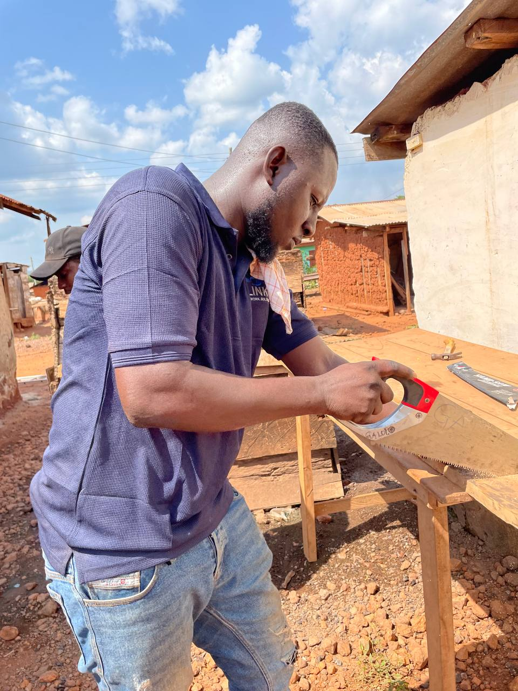

Bright
Co-founder & COO
Bright is the Chief Operating Officer and Co-founder of Swiftlink Network Solutions. With extensive experience in operations management and client relations, Bright ensures that our Starlink access point deployments run smoothly and our clients receive exceptional service.
As COO, Bright oversees all operational aspects of Swiftlink, from project management and logistics to customer support and partnership development. His focus on operational excellence has been key to scaling our network solutions across multiple regions.
Bright has a background in Business Administration from the University of Cape Coast and brings over 8 years of experience in telecom operations. Before co-founding Swiftlink, he managed large-scale network deployment projects for major African telecom operators.